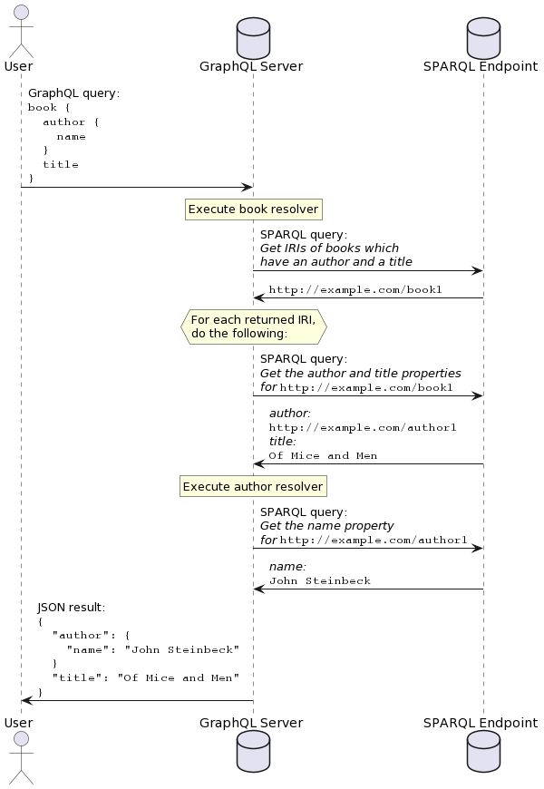

Querying
NOTE: This introduction is identical to the introduction given in the overview. If you have already read it, you may skip to the other subsections of this article.
SPARQLess utilizes a query translation approach, whereby incoming GraphQL queries are translated into SPARQL queries, executed on the SPARQL endpoint, and their results are aggregated into a JSON response returned by the GraphQL endpoint.
GraphQL querying is based on the concept of resolvers, which are functions, each of which is able to return a single requested property. If the following GraphQL query is sent to the GraphQL endpoint:
book {
author {
name
}
title
}
then a resolver will be called for the books field, and when that
resolver returns an object, resolvers for the author and title
fields will be run. SPARQLess resolvers effectively translate
each field query into a SPARQL query if the queried field contains
a non-scalar value. Scalar values are fetched with the parent object's
query.
Execution of this example query would look like this:

Query root execution
NOTE: The following description of query execution functionality describes the way it is implemented in this library. This is not the only possible way of implementing querying, and the design of this library accounts for different possible implementations in the future.
Each GraphQL query has a root Query object, whose fields
are all object types extracted from the SPARQL endpoint.
Each of these fields is a non-null list of objects,
which are resolved with a class resolver (implemented by
the createClassResolver factory function).
The class resolver is a function which is called by Apollo Server any time class instances are requested as part of a GraphQL query. Its job is to return the requested instances as plain JavaScript objects. It does this by looking at the requested fields for these objects, and executing a SPARQL query which returns a list of IRIs representing the objects to be returned from the resolver.
If we take the following GraphQL query:
dcat_Dataset(limit: $limit) {
title {
cs
en
}
conformsTo
}
then the corresponding SPARQL IRI query will look like this:
SELECT DISTINCT ?instance
WHERE
{
?instance a <http://www.w3.org/ns/dcat#Dataset> .
?instance <http://purl.org/dc/terms/title> [] .
?instance <http://purl.org/dc/terms/conformsTo> [] .
}
LIMIT 10
Afterwards, the class resolver takes the received instance IRIs, and for each of them, it executes a SPARQL query asking for that instance's properties which have been requested by the GraphQL query.
Assuming one of the IRIs returned by the previous query was
https://data.gov.cz/zdroj/datové-sady/00297569/3384952, then the followup
query asking for this instance's properties will look like this:
SELECT ?property ?value
WHERE
{
VALUES (?property)
{
( <http://purl.org/dc/terms/title> )
( <http://purl.org/dc/terms/conformsTo> )
}
<https://data.gov.cz/zdroj/datové-sady/00297569/3384952> ?property ?value .
}
Finally, the class resolver will create a plain JavaScript object containing the returned properties, and it will return it to Apollo Server. Apollo Server will then execute a resolver for each field on this object.
These additional resolvers are responsible for taking the data retrieved by the class resolver, and converting it into the appropriate format for return as the GraphQL query response. What this means in practice is that while everything is stored as a string in RDF, these additional resolvers have to convert these strings to the appropriate data types for their respective fields. For example, a boolean field resolver would parse the retrieved string into a boolean.
This chaining of resolvers will occur recursively for each field of objects nested in the query, until all fields have been resolved. The final GraphQL response for our example scenario will look like this:
"data": {
"dcat_Dataset": [
{
"title": {
"cs": [
"Moravskoslezský kraj - úřední deska"
],
"en": [
"Official bulletin board of Moravian-Silesian Region "
]
},
"conformsTo": [
"https://ofn.gov.cz/úřední-desky/",
"https://ofn.gov.cz/úřední-desky/2021-07-20/"
]
},
...
]
}
The concept of resolvers is described in more detail in the official GraphQL documentation in case you wish to learn more.